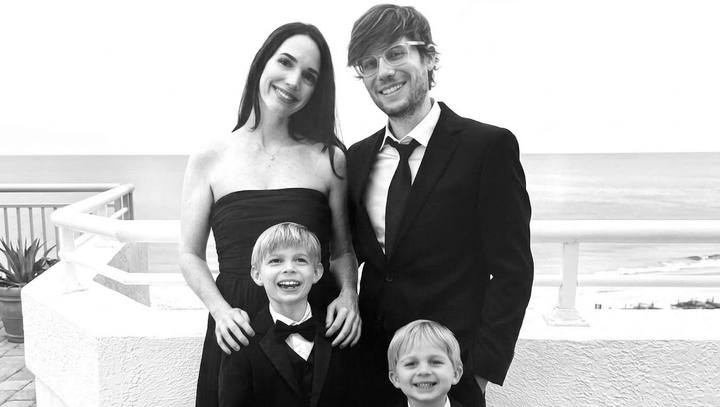

Remembering Steven Schrembeck
“nothing happens unless you make it happen”
Steven Schrembeck

Man am I going to miss those glasses.
The world lost a truly great mind, and wonderful human being this week. He was a great friend and mentor to many, particularly myself, and a person who thought differently and more deeply than anyone I know. Mostly though, he just wanted to help people.
On a daily basis Steven helped people get themselves unstuck, and in the greater scheme he aspired to help make everyone's lives easier. Particularly for neurodivergent people like myself. He played a massive part in where I am as an engineer and as a person, by nudging me to put my work in front of people when he thought the work was good. And there was no one I trusted more to know what was good. He gave me the confidence to get over my imposter syndrome and put myself out there. Now it's getting me to shut up that's the real trick. That's all Steven.
Steven Schrembeck was a Principal Engineer at Cox Automotive, a writer, a podcaster, and a maker of audio fiction. He passed away in September 2026.
Steven's work
If you only read one thing here, read him.
- A Different CompassHis blog of writings on first hand reality exploration. Start anywhere. (RSS)
- Reality 101His podcast, a journal of impossible experiences and his personal investigation into the nature of reality. (Listen in any app)
- Seeking MinimaHis YouTube channel, exploring meaning in AI, our future, and being better humans.
- CollectedHis immersive sci fi and fantasy audio fiction, with music, sound design, and a cast of voice actors, including the series Mortal Steel. (Listen in any app)
- Alien Spirit with Sev: Steven SchrembeckA long interview where he talks about AI, consciousness, contemplative practice, and his own experiences.
2021
AugustI asked Steven a random question about machine learning. Within the hour he'd sent me his own deep learning repos, told me which doors not to knock on, and offered to introduce me to the team that could actually put a model in front of users. We barely knew each other yet. That was just how he was.
His first reply when I asked for help:
Septemberokay, i can help
Before my first demo to the vision team:
msg me anytime if i can help test or be a practice audience. want to see you succeed!
2022
SeptemberI invited him to my daughter's birthday party because I needed more dad friends. He said he'd ask his four year old if he wanted to come. The answer was yes, and a few hours later he asked if his eight year old could come too.
2023
AprilOn getting out of a meeting gracefully:
Telling people you trust them completely is the best way to get out of something but make them feel good
2024
JanuaryOn knowledge and ego:
Don't be impressed by knowledge. Anyone can acquire that. Take your ability to learn new things very seriously though
AprilParadoxically I feel more capable the less I'm concerned about looking smart.
On what the office is for:
it's for relationships and really long meetings
2025
JanuaryWhen I told him I got a new job, he wrote back:
i'm so proud of you man. nothing happens unless you make it happen. ...sometimes after way too long
2026
JuneI showed him my generative UI experiment. He told me exactly which parts were good design and which parts were a waste of time, and then told me to share it. Nobody else pushed me to put it in front of people.
JulyOn AI:
I still believe the best AI features are not obviously AI features. Simply do a better job of presenting what they already want.
Julyswapping UI for a chat interface isn't where i see much opportunity. far better to swap UI for nothing
He was the first person to join an applied AI group I started. Then he cunningly dropped a mention of my generative UI demo, and a day later I had an office hours slot to show it to a lot of people. That demo led to pretty much everything I've done since. When I told him what he'd started, he said:
all i did was point them at what you'd already done ;)
On AI productivity gains:
Augustwe're just running in circles faster
Our last real conversation. He'd been heads down for months and asked what in AI was worth paying attention to, adding "i think you know me well enough to understand what I think qualifies." I did. I was looking forward to showing him what came next.
What he left
I'm working to preserve his legacy so that one day his children, as well as anyone else bouncing around the internet, can discover his fascinating mind and beautiful soul. I've linked to some of his content here, in an effort to collect artifacts to publish via the internet archives.

I love you Steven, vaya con Dios buddy.